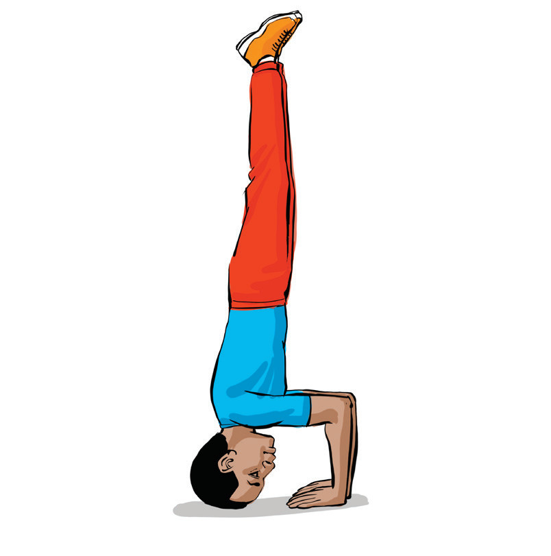

(v) Hold and balance to maintain a straight body position and keep your weight evenly distributed.

Standing scale
A standing scale is a gymnastics balance skill where a gymnast stands on one leg and extends the other leg in a controlled position. It helps to develop flexibility, balance, and body control and is commonly seen in artistic gymnastics. Depending on positioning, there are front scales, side scales, and back scales. The following steps will help you practice standing scale:
(i)
Stand tall with feet together, core engaged, keeping the standing leg straight and strong;
(ii)
Lift the other leg extending it forward, sideways, or backward while maintaining control, Figure 4.11;
(iii)
Engage core and hold keeping your back straight, and arms extended for balance; and
(iv)
Lower the leg smoothly returning to a standing position with control.
SPORTS STUDIES FORM TWO.indd 117
9/17/25 9:54 AM